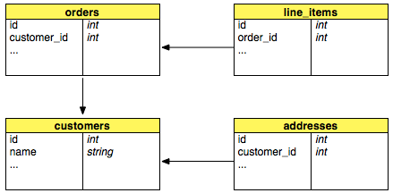
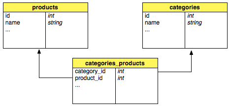
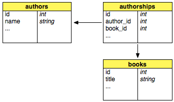

Ruby on Rails 1.1 Reference
Create a rails application
$ rails app_name
Options:
- -d, –database=xxx specify which database to use (mysql oracle postgresql sqlite2 sqlite3 ), defaults to mysql
- -r, –ruby-path= specify the path to ruby, if not set, the scripts use env to find ruby
- -f, –freeze freezes Rails into the
vendor/railsdirectory
API Documentation
$ gem_server
Open a web browser with the address localhost:8088
Rake
is the make of ruby - the R uby m AKE. Rails defines a number of tasks to help you:
rake db:fixtures:load # Load fixtures into the current environment’s database.
# Load specific fixtures using FIXTURES=x,y
rake db:migrate # Migrate the database through scripts in db/migrate. Target
# specific version with VERSION=x
rake db:schema:dump # Create a db/schema.rb file that can be portably used against
# any DB supported by AR
rake db:schema:load # Load a schema.rb file into the database
rake db:sessions:clear # Clear the sessions table
rake db:sessions:create # Creates a sessions table for use with
# CGI::Session::ActiveRecordStore
rake db:structure:dump # Dump the database structure to a SQL file
rake db:test:clone # Recreate the test database from the current environment’s
# database schema
rake db:test:clone_structure # Recreate the test databases from the development structure
rake db:test:prepare # Prepare the test database and load the schema
rake db:test:purge # Empty the test database
rake doc:app # Build the app HTML Files
rake doc:clobber_app # Remove rdoc products
rake doc:clobber_plugins # Remove plugin documentation
rake doc:clobber_rails # Remove rdoc products
rake doc:plugins # Generate documation for all installed plugins
rake doc:rails # Build the rails HTML Files
rake doc:reapp # Force a rebuild of the RDOC files
rake doc:rerails # Force a rebuild of the RDOC files
rake log:clear # Truncates all *.log files in log/ to zero bytes
rake rails:freeze:edge # Lock this application to latest Edge Rails. Lock a specific
# revision with REVISION=X
rake rails:freeze:gems # Lock this application to the current gems (by unpacking them
# into vendor/rails)
rake rails:unfreeze # Unlock this application from freeze of gems or edge and return
# to a fluid use of system gems
rake rails:update # Update both scripts and public/javascripts from Rails
rake rails:update:javascripts # Update your javascripts from your current rails install
rake rails:update:scripts # Add new scripts to the application script/ directory
rake stats # Report code statistics (KLOCs, etc) from the application
rake test # Test all units and functionals
rake test:functionals # Run tests for functionalsdb:test:prepare
rake test:integration # Run tests for integrationdb:test:prepare
rake test:plugins # Run tests for pluginsenvironment
rake test:recent # Run tests for recentdb:test:prepare
rake test:uncommitted # Run tests for uncommitteddb:test:prepare
rake test:units # Run tests for unitsdb:test:prepare
rake tmp:cache:clear # Clears all files and directories in tmp/cache
rake tmp:clear # Clear session, cache, and socket files from tmp/
rake tmp:create # Creates tmp directories for sessions, cache, and sockets
rake tmp:sessions:clear # Clears all files in tmp/sessions
rake tmp:sockets:clear # Clears all ruby_sess.* files in tmp/sessions
Scripts
script/about # Information about environenment
script/breakpointer # starts the breakpoint server
script/console # interactive Rails Console
script/destroy # deletes files created by generators
script/generate # -> generators
script/plugin # -> Plugins
script/runner # executes a task in the rails context
script/server # launches the development server
# http://localhost:3000
script/performance/profiler # profile an expenive method
script/performance/benchmarker # benchmark different methods
script/process/reaper
script/process/spawner
Generators
ruby script/generate model ModellName
ruby script/generate controller ListController show edit
ruby script/generate scaffold ModelName ControllerName
ruby script/generate migration AddNewTable
ruby script/generate plugin PluginName
ruby script/generate mailer Notification lost_password signup
ruby script/generate web_service ServiceName api_one api_two
ruby script/generate integration_test TestName
ruby script/generate session_migration
Options
-p, –pretend Run but do not make any changes.
-f, –force Overwrite files that already exist.
-s, –skip Skip files that already exist.
-q, –quiet Suppress normal output.
-t, –backtrace Debugging: show backtrace on errors.
-h, –help Show this help message.
-c, –svn Modify files with subversion. (Note: svn must be in path)
Plugins
script/plugin discover # discover plugin repositories
script/plugin list # list all available plugins
script/plugin install where # install the „where“ plugin
script/plugin install -x where # install where plugin as SVN external
script/plugin install http://invisible.ch/projects/plugins/where
script/plugin update # update installed plugins
script/plugin source # add a source repository
script/plugin unsource # removes a source repository
script/plugin sources # lists source repositories
A searchable directory of plugins can be found at AgileDevelopment.
Models
Model Relations
There are four ways of associating models. has_one, has_many, belongs_to and has_and_belongs_to_many

def Order < ActiveRecord::Base
has_many :line_items
belongs_to :customer # there's a column "customer_id" in the db table
end
def LineItem < ActiveRecord::Base
belongs_to :order # there's a column "order_id" in the db table
end
def Customer < ActiveRecord::Base
has_many :orders
has_one :address
end
def Address < ActiveRecord::Base
belongs_to :customer
end
belongs_to :some_model,
:class_name => ‘MyClass’, # specifies other class name
:foreign_key => ‘my_real_id’, # and primary key
:conditions => ‘column = 0’ # only finds when this condition met
has_one :some_model,
# as belongs_to and additionally:
:dependent => :destroy # deletes associated object
:order => ‘name ASC’ # SQL fragment for sorting
has_many :some_model
# as has_one and additionally:
:dependent => :destroy # deletes all dependent data
# calling each objects destroy
:dependent => :delete_all # deletes all dependent data
# without calling the destroy methods
:dependent => :nullify # set association to null, not
# destroying objects
:group => ‘name’ # adds GROUP BY fragment
:finder_sql => ‘select ….’ # instead of the Rails finders
:counter_sql => ‘select …’ # instead of the Rails counters

def Category < ActiveRecord::Base
has_and_belongs_to_many :products
end
def Product < ActiveRecord::Base
has_and_belongs_to_many :categories
end
Table categories_products with category_id and product_id (without id column)
Association Join Models

class Author < ActiveRecord::Base
has_many :authorships
has_many :books, :through => :authorships
end
class Authorship < ActiveRecord::Base
belongs_to :author
belongs_to :book
end
class Book < ActiveRecord::Base
has_one :authorship
end
@author = Author.find :first
@author.authorships.collect { |a| a.book } # selects all books that the author's
# authorships belong to.
@author.books # selects all books by using the Authorship
# join model
Also works through has_many associations:
class Firm < ActiveRecord::Base
has_many :clients
has_many :invoices, :through => :clients
has_many :paid_invoices, :through => :clients, :source => :invoice
end
class Client < ActiveRecord::Base
belongs_to :firm
has_many :invoices
end
class Invoice < ActiveRecord::Base
belongs_to :client
end
@firm = Firm.find :first
@firm.clients.collect { |c| c.invoices }.flatten # select all invoices for all clients
# of the firm
@firm.invoices # selects all invoices by going through
# the Client join model.
Validations
validates_presence_of :firstname, :lastname # must be filled out
validates_length_of :password,
:minimum => 8 # more than 8 characters
:maximum => 16 # shorter than 16 characters
:in => 8..16 # between 8 and 16 characters
:too_short => ‘way too short’
:too_long => ‘way to long’
validates_acceptance_of :eula # Must accept a condition
:accept => ‘Y’ # default: 1 (ideal for a checkbox)
validates_confirmation_of :password
# the fields password and password_confirmation must match
validates_uniqueness_of :user_name # user_name has to be unique
:scope => ‘account_id’ # Condition:
# account_id = user.account_id
validates_format_of :email # field must match a regular expression
:with => /^([^@\s]+)@((?:[-a-z0-9]+.)+[a-z]{2,})$/i
validates_numericality_of :value # value is numeric
:only_integer => true
:allow_nil => true
validates_inclusion_in :gender, # value is in enumeration
:in => %w( m, f )
validates_exclusion_of :age # value is not in Enumeration
:in => 13..19 # don’t want any teenagers
validates_associated :relation
# validates that the associated object is valid
Options for all validations above:
:message => ‘my own errormessage’ # eigene Fehlermeldung
:on => :create # or :update (validates only then)
:if => … # call method oder Proc
Calculations
Person.average :age
Person.minimum :age
Person.maximum :age
Person.sum :salary, :group => :last_name
Find
find(42) # object with ID 42
find([37, 42]) # Array with the objects with id 37, 42
find :all
find :first,
:conditions => [ “name = ?”, “Hans” ] # finds the first record with
# the matching condition
more parameters for find:
:order => ‘name DESC’ # sql fragment for sorting
:offset => 20 # starts with entry 20
:limit => 10 # only return 10 objects
:group => ‘name’ # sql fragment GROUP BY
:joins => ‘LEFT JOIN …’ # additional LEFT JOIN (rarely used)
:include => [:account, :friends] # LEFT OUTER JOIN with these model
:include => { :groups => { :members=> { :favorites } } }
:select => [:name, :adress] # instead of SELECT * FROM
:readonly => true # objects are write protected
Scope
Developer.with_scope(:find => { :conditions => “salary > 10000”, :limit => 10 }) do
Developer.find(:all) # => SELECT * FROM developers WHERE (salary > 10000) LIMIT 10
# inner rule is used. (all previous parameters are ignored)
Developer.with_exclusive_scope(:find => { :conditions => “name = ‘Jamis’” }) do
Developer.find(:all) # => SELECT * FROM developers WHERE (name = ‘Jamis’)
end
# parameters are merged
Developer.with_scope(:find => { :conditions => “name = ‘Jamis’” }) do
Developer.find(:all) # => SELECT * FROM developers WHERE
# (( salary > 10000 ) AND ( name = ‘Jamis’ )) LIMIT 10
end
end
for more details and examples, see:
- http://www.codyfauser.com/articles/2006/02/01/using-with_scope-to-refactor-messy-finders
- http://blog.caboo.se/articles/2006/02/22/nested-with_scope
Callbacks
During the life cycle of an active record object, you can hook into 9 events:
- (-) save
- (-) valid?
- (1) before_validation
- (2) before_validation_on_create
- (-) validate
- (-) validate_on_create
- (4) after_validation
- (5) after_validation_on_create
- (6) before_save
- (7) before_create
- (-) create
- (8) after_create
- (9) after_save
Examples:
class Subscription < ActiveRecord::Base
before_create :record_signup
private
def record_signup
self.signed_up_on = Date.today
end
end
class Firm < ActiveRecord::Base
# Destroys the associated clients and people when the firm is destroyed
before_destroy { |record| Person.destroy_all "firm_id = #{record.id}" }
before_destroy { |record| Client.destroy_all "client_of = #{record.id}" }
end
Observers
The Observer classes let's you extract the functionality of the callbacks:
class CommentObserver < ActiveRecord::Observer
def after_save(comment)
Notifications.deliver_comment("admin@do.com", "New comment was posted", comment)
end
end
Store observers in app/model/model_observer.rb
Enable observer by putting this in config/environment.rb
config.active_record.observers = :comment_observer, :signup_observer
Migration
ruby sript/generate migration AddTables
Creates a file db/migrations/001_add_tables. The methods "up" and "down" change the db schema
def self.up # brings db schema to the next version
create_table :table, :force => true do |t|
t.column :name, :string
t.column :age, :integer, { :default => 42 }
t.column :description, :text
# :string, :text, :integer, :float, :datetime, :timestamp, :time, :date,
# :binary, :boolean
end
add_column :table, :column, :type
rename_column :table, :old_name, :new_name
change_column :table, :column, :new_type
execute “SQL Statement”
add_index :table, :column, :unique => true, :name => ‘some_name’
add_index :table, [ :column1, :column2 ]
end
def self.down # rollbacks changes
rename_column :table, :new_name, :old_name
remove_column :table, :column
drop_table :table
remove_index :table, :column
end
To execute the migration:
rake db:migrate
rake db:migrate VERSION=14
rake db:migrate RAILS_ENV=production
Unit Test
rake test:units
The following assertions are available:
assert_kind_of Class, @var # same class
assert @var # not nil
assert_equal 1, @p.id # equality
@product.destroy
assert_raise(ActiveRecord::RecordNotFound) { Product.find( @product.id ) }
Controllers
Controller methods
Each public method in a controller is callable by the (standard) URL scheme /controller/action
class WorldController < ApplicationController
def hello
render :text => ‘Hello world’
end
Parameters are stored in the params hash:
/world/hello/1?foo=bar
id = params[:id] # 1
foo = params[:foo] # bar
Instance variables defined in the the controllers methods are available to the corresponding view templates:
def show
@person = Person.find( params[:id])
end
Distinguish the type of response accepted:
def index
@posts = Post.find :all
respond_to do |type|
type.html # using defaults, which will render weblog/index.rhtml
type.xml { render :action => “index.rxml” }
type.js { render :action => “index.rjs” }
end
end
Render
Usually the view template with the same name as the controller method is used to render the results
Action
render :action => ‘some_action’ # the default. Does not need to be specified
# in a controller method called “some_action”
render :action => ‘another_action’, :layout => false
render :action => ‘some_action’, :layout => ‘another_layout’
Partials
Partials are stored in files called “_subformname” ( _error, _subform, _listitem)
render :partial => ‘subform’
render :partial => ‘error’, :status => 500
render :partial => ‘subform’, :locals => { :variable => @other_variable }
render :partial => ‘listitem’, :collection => @list
render :partial => ‘listitem’, :collection => @list, :spacer_template => ‘list_divider’
Template
Like rendering an action, but finds the template based on the template root (app/views)
render :template => ‘weblog/show’ # renders app/views/weblog/show
File
render :file => ‘/path/to/some/file.rhtml’
render :file => ‘/path/to/some/filenotfound.rhtml’, status => 404, :layout => true
Text
render :text => “Hello World”
render :text => “This is an error”, :status => 500
render :text => “Let’s use a layout”, :layout => true
render :text => ‘Specific layout’, :layout => ‘special’
Inline Template
Uses ERb to render the “miniature” template
render :inline => ”<%= 'hello , ' * 3 + 'again' %>”
render :inline => ”<%= 'hello ' + name %>”, :locals => { :name => “david” }
Nothing
render :nothing
render :nothing, :status => 403 # forbidden
RJS
def refresh
render :update do |page|
page.replace_html ‘user_list’, :partial => ‘user’, :collection => @users
page.visual_effect :highlight, ‘user_list’
end
end
Change the content-type:
render :action => “atom.rxml”, :content_type => “application/atom+xml”
URL Routing
In config/routes.rb
map.connect ”, :controller => ‘posts’, :action => ‘list’ # default
map.connect ‘:action/:controller/:id’
map.connect ‘tasks/:year/:month’, :controller => ‘tasks’,
:action => ‘by_date’,
:month => nil, :year => nil,
:requirements => {:year => /\d{4}/,
:month => /\d{1,2}/ }
Filter
Filters can change a request before or after the controller. They can for example be used for authentication, encryption or compression.
before_filter :login_required, :except => [ :login ]
before_filter :autenticate, :only => [ :edit, :delete ]
after_filter :compress
It’s also possible to use a Proc for a really small filter action:
before_filter { |controller| false if controller.params[“stop_action”] }
Change the order of your filters by using prepend_before_filter and prepend_after_filter (like prepend_before_filter :some_filter which will put the some_filter at the beginning of the filter chain)
If you define a filter in a super class, you can skip it in the subclass:
skip_before_filter :some_filter
skip_after_filter :some_filter
Session / Flash
To save data across multiple requests, you can use either the session or the flash hashes. A flash stores a value (normally text) until the next request, while a session stores data during the complete session.
session[:user] = @user
flash[:message] = “Data was saved successfully”
<%= link_to "login", :action => ‘login’ unless session[:user] %>
<% if flash[:message] %>
<div><%= h flash[:message] %></div>
<% end %>
Session management
It’s possible to turn off session management:
session :off # turn session managment off
session :off, :only => :action # only for this :action
session :off, :except => :action # except for this action
session :only => :foo, # only for :foo when doing HTTPS
:session_secure => true
session :off, :only => :foo, # off for foo, if uses as Web Service
:if => Proc.new { |req| req.parameters[:ws] }
Cookies
Setting
cookies[:user_name] = “david” # => Will set a simple session cookie
cookies[:login] = { :value => “XJ-122”, :expires => Time.now + 3600}
# => Will set a cookie that expires in 1 hour
Reading
cookies[:user_name] # => “david”
cookies.size # => 2
Deleting
cookies.delete :user_name
All the option symbols for setting cookies are:
- value - the cookie’s value or list of values (as an array).
- path - the path for which this cookie applies. Defaults to the root of the application.
- domain - the domain for which this cookie applies.
- expires - the time at which this cookie expires, as a +Time+ object.
- secure - whether this cookie is a secure cookie or not (default to false). Secure cookies are only transmitted to HTTPS servers.
Views
View Templates
All view templates are stored in app/views/controllername. The extension determines what kind of template format is used:
- rhtml Ruby HTML (using ERB)
- rxml Ruby XML (using Builder)
- rjs Ruby JavaScript
All instance variables of the controller are available to the view. In addition, the following special objects can be accessed:
- headers The Headers of the outgoing response
- request The incoming request object
- response The outgoing response object
- params The parameter hash
- session The session hash
- controller The current controller
HTML
HTMl mixed with Ruby using tags. All of Ruby is available for programming
<% %> # executes the Ruby code
<%= %> # executes the Ruby code and displays the result
<ul>
<% @products.each do |p| %>
<li><%= h @p.name %></li>
<% end %>
</ul>
The output of anything in <%= %> tags is directly copied to the HTML output stream. To secure against HTML injection, use the h() function to html_escape the output
RXML
Creates XML files
xml.instruct! # <?xml version="1.0" encoding="UTF-8"?>
xml.comment! “a comment” # <!-- a comment -->
xml.feed “xmlns” => “http://www.w3.org/2005/Atom” do
xml.title “My Atom Feed”
xml.subtitle h(@feed.subtitle), “type” => ‘html’
xml.link url_for( :only_path => false,
:controller => ‘feed’,
:action => ‘atom’ )
xml.updated @updated.iso8601
xml.author do
xml.name “Jens-Christian Fischer”
xml.email “jcfischer@gmail.com”
end
@entries.each do |entry|
xml.entry do
xml.title entry.title
xml.link “href” => url_for ( :only_path => false,
:controller => ‘entries’,
:action => ‘show’,
:id => entry )
xml.id entry.urn
xml.updated entry.updated.iso8601
xml.summary h(entry.summary)
end
end
end
for more details see: http://rubyforge.org/projects/builder/
RJS
In addition to HTML and XML templates, Rails also understands JavaScript Templates. They allow you to easily create complex alterations of the displayed page. You can manipulate a page element with the following methods:
select Select a DOM element for further processing
page.select(‘pattern’) # selects an item on the page through a CSS pattern
# select(‘p’), select(‘p.welcome b’)
page.select(‘div.header em’).first.hide
page.select(‘#items li’).eacj do |value|
value.hide
end
insert_html Inserts content into the DOM at a specific position
page.insert_html :position, id, content
position can be one of the following:
:top:bottom:before:after
Examples:
page.insert_html :bottom, ‘list’, ’<li>last item</li>’
page.insert_html :before, ‘tasks’, :partial => ‘task’
replace_html Replaces the innerHTML of the specified DOM element
page.replace_html ‘title’, “This is the new title”
page.replace_html ‘person-45’, :partial => ‘person’, :object => @person
replace Replaces the “outer HTML”, (i.e. the entire element) of the specified DOM element
page.replace ‘task’, :partial => ‘task’, :object => @task
remove Removes the specified DOM element
page.remove ‘edit-button’
hide Hides the specified DOM element
page.hide ‘some-element’
show Shows the specified DOM element
page.show ‘some-element’
toggle Toggle the visibility of a DOM element
page.toggle ‘some-element’
alert Display an alert box
page.alert ‘Hello world’
redirect_to Redirects the browser to a given location
page.redirect_to :controller => ‘blog’, :action => ‘show’, :id => @post
call Calls another JavaScript function
page.call foo, 1, 2
assign Assigns a value to a JS variable
page.assign “foo”, 42
<< Writes raw JavaScript to the page
page << "alert('hello world);"
delay Delays the code in the block by a number of seconds
page.delay(10) do
page.visual_effect :fade, 'notice'
end
visual_effect Calls a Scriptaculous effect
page.visual_effect :highlight, 'notice', :duration => 2
sortable Create a sortable element
page.sortable ‘my_list’, :url => { :action => ‘order’ }
dragable Create a dragable element
page.dragable ‘my_image’, :revert => true
drop_receiving Create an element for receiving drops
page.drop_recieving ‘my_cart’, :url => { :controller => ‘cart’, :action => ‘add’ }
Helpers
Small functions, usually used for displaying data, can be extracted to helpers. Each view has it’s own helper class (in app/helpers). Common functionality is stored in app/helpers/application_helper.rb
Links
link_to “Name”, :controller => ‘post’, :action => ‘show’, :id => @post.id
link_to “Delete”, { :controller => “admin”,
:action => “delete”,
:id => @post },
{ :class => ‘css-class’,
:id => ‘css-id’,
:confirm => “Are you sure?” }
image_tag “spinner.png”, :class => “image”, :alt => “Spinner”
mail_to “info@invisible.ch”, “send mail”,
:subject => “Support request by #{@user.name}”,
:cc => @user.email,
:body => ‘….’,
:encoding => “javascript”
stylesheet_link_tag “scaffold”, “admin”, :media => “all”
HTML Forms
Form
<%= form_tag { :action => :save }, { :method => :post } %>
creates a form tag with the specified action, makes it a post request.
Use :multipart => true to define a Mime-Multipart form (for file uploads)
Text fields
<%= text_field :modelname, :attribute_name, options %>
creates a text input field of the form:
<input type="text" name="modelname[attribute_name]" id="attributename" />
Example:
text_field “post”, “title”, “size” => 20
<input type="text" id="post_title" name="post[title]"
size="20" value="#{@post.title}" />
<%= hidden_field ... %>
creates a hidden field
<%= password_field ... %>
creates a password field (all input shown as stars)
<%= file_field ... %>
creates a file field
Textarea
<%= text_area ... %>
creates a text area. Example:
text_area “post”, “body”, “cols” => 20, “rows” => 40
<textarea cols="20" rows="40" id="post_body" name="post[body]">
#{@post.body}
</textarea>
Radio Button
<%= radio_button :modelname, :attribute, :tag_value, options %>
creates a radio button.
Example:
radio_button “post”, “category”, “rails”
radio_button “post”, “category”, “java”
<input type="radio" id="post_category" name="post[category]" value="rails"
checked="checked" />
<input type="radio" id="post_category" name="post[category]" value="java" />
Check Box
<%= check_box :modelname, :attribute, options, on_value, off_value %>
Example:
check_box “post”, “validated” # post.validated? returns 1 or 0
<input type="checkbox" id="post_validate" name="post[validated]"
value="1" checked="checked" />
<input name="post[validated]" type="hidden" value="0" />
check_box “puppy”, “gooddog”, {}, “yes”, “no”
<input type="checkbox" id="puppy_gooddog" name="puppy[gooddog]" value="yes" />
<input name="puppy[gooddog]" type="hidden" value="no" />
Options
Create a select tag. Pass an array of choices
<%= select :variable, :attribute, choices, options, html_options %>
select “post”,
“person_id”,
Person.find_all.collect {|p| [ p.name, p.id ] },
{ :include_blank => true }
<select name="post[person_id]">
<option></option>
<option value="1" selected="selected">David</option>
<option value="2">Sam</option>
<option value="3">Tobias</option>
</select>
<%= collection_select :variable, :attribute, choices, :id, :value %>
Date Time
<%= date_select :variable, :attribute, options %>
<%= datetime_select :variable, :attribute, options %>
Examples:
date_select “post”, “written_on”
date_select “user”, “birthday”, :start_year => 1910
date_select “user”, “cc_date”, :start_year => 2005,
:use_month_numbers => true,
:discard_day => true,
:order => [:year, :month]
datetime_select “post”, “written_on”
End Form Tag
<%= end_form_tag %>
Layouts
A layout defines the surroundings of an HTML page. It’s the place to define common look & feel. Layouts live in app/views/layouts
<html>
<head>
<title>Form: <%= controller.action_name %></title>
<%= stylesheet_link_tag 'scaffold' %>
</head>
<body>
<%= yield %> # the content will show up here
</body>
</html>
—-
class MyController < ApplicationController
layout "standard", :except => [ :rss, :atom ]
…
end
—-
class MyOtherController < ApplicationController
layout :compute_layout
# this method computes the name of the layout to use
def compute_layout
return "admin" if session[:role] == "admin"
"standard"
end
...
end
Layouts have access to the instance variables of the controller so you can pass values "up"
Partials
Partials are building blocks for creating views. They allow re-use of commonly used display blocks. They are stored in files:
render :partial => ‘product’
loads the partial in _form.rthml and passed the instance variable @product to it. The partial can access it using @product
render :partial => ‘product’, :locals => { :product => @bought }
loads the same partial but assigns a different instance variable to it.
render :partial => ‘product’, :collection => @product_list
renders the partial for each element in @product_list and assigns @product to each element. An iteration counter will automatically be made available to the template with a name of the form partial_name_counter (in the above example: product_counter).
Components
To reuse both controller logic and views, use them as “components”
render_component :controller => ‘posts’, :action => ‘last_posts’
That calls last_posts in the PostsController. Use
render :layout => false, …
or
layout “xxx”, :except => ‘last_posts’
to render this action without a layout
Functional Testing
rake test:functional
Requests
get :action # a get request of the specificed action
get :action, :id => 1,
{ session_hash }, # optional session variables
{ flash_hash } # optional messages in the flash
post :action, :foo => { :value1 => ‘abc’, :value2 => ‘123’ },
{ :user_id => 17 },
{ :message => ‘success’ }
get, post, put, delete, head
assert_response :success
# possible parameters are:
# :success
# :redirect
# :missing
# :error
Redirects
assert_redirected_to :action => :other_action
assert_redirected_to :controller => ‘foo’, :action => ‘bar’
assert_redirected_to http://www.invisible.ch
Rendered with template
assert_template “post/index”
Variable assignments
assert_nil assigns(:some_variable)
assert_not_nil assigns(:some_variable)
assert_equal 17, assigns(:posts).size
Rendering of specific tags
assert_tag :tag => ‘body’
assert_tag :content => ‘Rails Seminar’
assert_tag :tag => ‘div’, :attributes => { :class => ‘index_list’ }
assert_tag :tag => ‘head’, :parent => { :tag => ‘body’ }
assert_tag :tag => ‘html’, :child => { :tag => ‘head’ }
assert_tag :tag => ‘body’, :descendant => { :tag => ‘div’ }
assert_tag :tag => ‘ul’,
:children => { :count => 1..3,
:only => { :tag => ‘li’ } }
AJAX
Be sure to include the javascript libraries in the layout
<%= javascript_include_tag :defaults %>
Linking to remote action
<%= link_to_remote "link", :update => ‘some_div’,
:url => { :action => ‘show’, :id => post.id } %>
<%= link_to_remote "link", :url => { :action => ‘create’,
:update => { :success => ‘good_div’,
:failure => ‘error_div’ },
:loading => ‘Element.show(‘spinner’),
:complete => ‘Element.hide(‘spinner’) } %>
Callbacks
:loading Called when the remote document is being loaded with data
by the browser.
:loaded Called when the browser has finished loading the remote document.
:interactive Called when the user can interact with the remote document,
even though it has not finished loading.
:success Called when the XMLHttpRequest is completed, and the HTTP
status code is in the 2XX range.
:failure Called when the XMLHttpRequest is completed, and the HTTP
status code is not in the 2XX range.
:complete Called when the XMLHttpRequest is complete (fires after
success/failure if they are present).
You can also specifiy reactions to return codes directly:
link_to_remote word,
:url => { :action => “action” },
404 => “alert(‘Not found…? Wrong URL…?’)”,
:failure => “alert(‘HTTP Error ’ + request.status + ‘!’)”
AJAX Forms
Create a form that will submit via an XMLHttpRequest instead of a
POST request. The parameters are passed exactly the same way (so the
controller can use the params method to access the
parameters). Fallback for non JavaScript enabled browsers can be
specified by using the :action methods in the :html option.
form_remote_tag :html => { :action => url_for(:controller => ‘controller’,
:action => ‘action’),
:method => :post }
Autocompleting textfield
In View:
<%= text_field_with_auto_complete :model, :attribute %>
In Controller:
auto_complete_for :model, :attribute
Observe Field
<label for="search">Search term:</label>
<%= text_field_tag :search %>
<%= observe_field(:search,
:frequency => 0.5,
:update => :results,
:url => { :action => :search }) %>
<div id="results"></div>
Optionally specify:
:on => :blur # trigger for event (default :changed or :clicked)
:with => … # a JavaScript expression to specify what value is sent
# defaults to “value”
:with => ‘bla’ # “‘bla’ = value”
:with => ‘a=b’ # “a=b”
Observe Form
Same semantics as observe_field
Periodically call Remote
<%= periodically_call_remote(:update => ‘process-list’,
:url => { :action => :ps },
:frequency => 2 ) %>
Configuring your application
A lot of things can be configured in the config/environment.rb file. This list is not exhaustive:
Session configuration
config.action_controller.session_store = :active_record_store
# one of :active_record_store, :drb_store,
# :mem_cache_store, or :memory_store or your own class
ActionController::Base.session_options[:session_key] = ‘my_app’
# use an application specific session_key
ActionController::Base.session_options[:session_id] = ‘12345’
# use this session_id. Will be created if not specified
ActionController::Base.session_options[:session_expires] = 3.minute.from_now
# how long before a session expires?
ActionController::Base.session_options[:new_session] = true
# force the creation of a new session
ActionController::Base.session_options[:session_secure] = true
# only use sessions over HTTPS
ActionController::Base.session_options[:session_domain] = ‘invisible.ch’
# Specify which domain this session is valid for (default: hostname of server)
ActionController::Base.session_options[:session_path] = ‘/my_app’
# the path for which this session applies. Defaults to the
# directory of the CGI script
Caching configuration
ActionController::Base.fragment_cache_store = :file_store, “/path/to/cache/directory”
Appendix
Sources
- Agile Web Development with Rails
- The Rails-Users mailing list
- The Rails Source code
License
Part of the course materials for the Ruby On Rails Workshop by InVisible GmbH.
InVisible GmbH
Langgrütstrasse 172
8047 Zürich
+41 44 401 09 30
http://www.invisible.ch
mailto:info@invisible.ch

Dieser Inhalt ist unter einer Creative Commons-Lizenz lizenziert.
update: This version of the reference is from May 06. You may find an updated version on InVisible